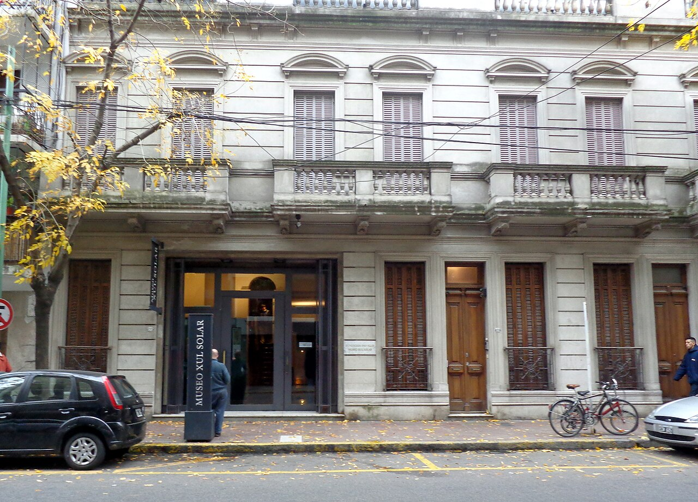
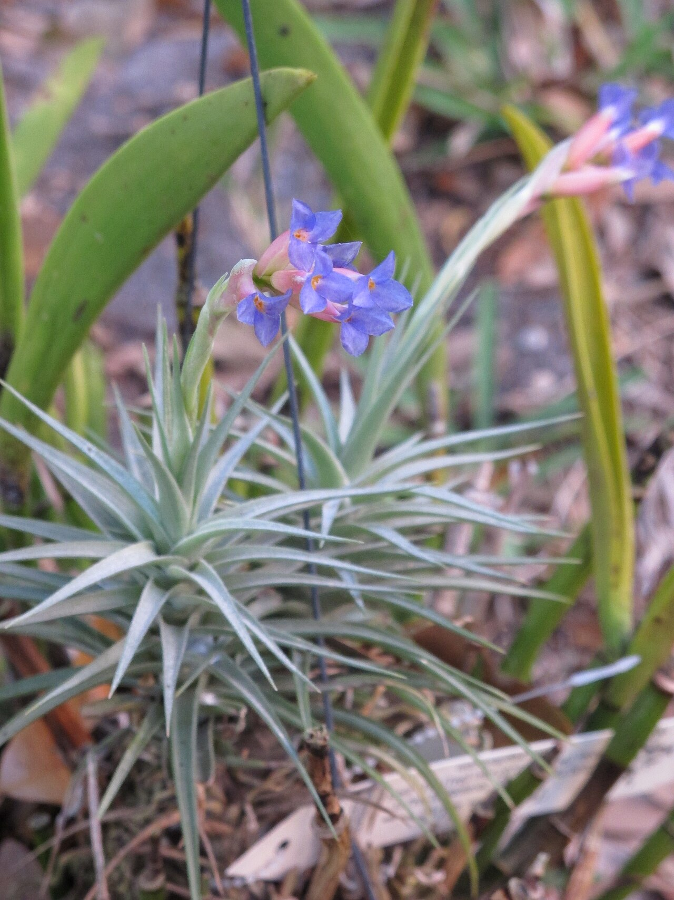
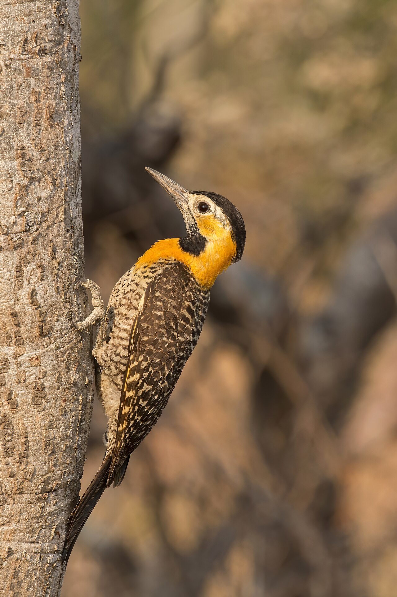
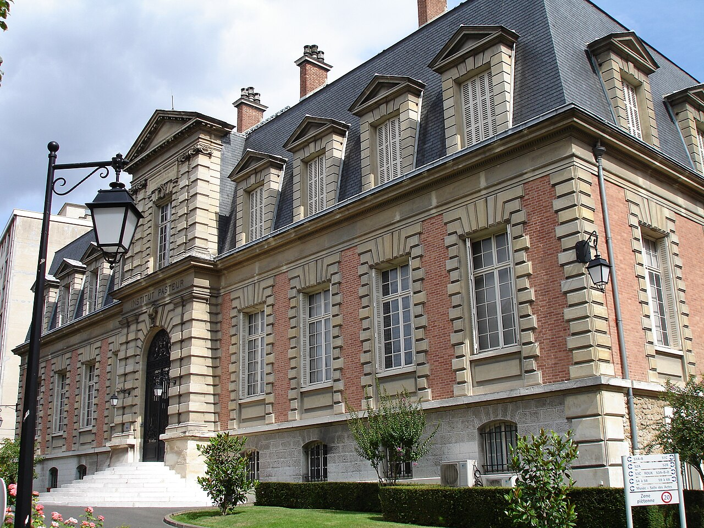

Lula.
diario de la mañana — el mundo, tu ciudad y lo que te asombra

Buen día. Lunes fresco y nublado, de 9° a 18°, sin lluvias. Ganó Lula en Brasil por un margen chico y el mercado reaccionó fuerte: el real se derrumbó más de 8 % y acá esperan contagio. La ciencia de hoy es de las que te hacen querer entrar a un laboratorio: una organela sintética que se instala en una célula humana y graba qué genes estuvieron prendidos, para poder leerlo días después. Y el arte es el más raro y más divertido de Buenos Aires: Xul Solar, que además de pintar inventó dos idiomas y un ajedrez.
- El mundo en cinco minutos3'
- Argentina y Buenos Aires2'
- Ciencia: una grabadora adentro de la célula7'
- Mirá a tu alrededor2'
- Receta de estación2'
- La palabra del día1'
- Le français du matin2'
- English corner3'
- Lunes de arte: Xul Solar5'
- Hoy en la historia · un lugar2'
- Lo que me asombra hoy1'
- Pasatiempo: sudoku fácil10'
- Cuaderno: repaso, quiz y escritura4'
Lula gana por tres puntos y medio y vuelve por cuarta vez
Con el 100 % escrutado, Luiz Inácio Lula da Silva se impuso con 51,79 % frente al 48,21 % de Flávio Bolsonaro. Es una remontada: en la primera vuelta había quedado segundo por dos puntos. Lula será presidente de Brasil por cuarta vez, la segunda consecutiva. Según los resúmenes de prensa, Flávio Bolsonaro no reconoció la derrota, mientras los presidentes del Senado y de Diputados felicitaron al ganador y defendieron la transparencia del escrutinio.
Por qué importa acá: Brasil es el principal socio comercial de la Argentina y el destino de cerca de un quinto de nuestras exportaciones. Y el Gobierno argentino había apoyado públicamente a Bolsonaro, así que la relación empieza con una deuda diplomática.
La reacción de los mercados fue inmediata
El real se desplomó más de 8 % frente al dólar y el EWZ —el fondo que replica las acciones brasileñas y que es la referencia internacional para el país— cayó más de 20 % en los minutos finales del conteo. Los analistas locales anticipan presión sobre acciones, bonos y riesgo país argentinos por contagio.
Y además
Votaron también Bulgaria (presidenciales) y Serbia (parlamentarias anticipadas). Sigue en Ereván la COP17 de biodiversidad, que cierra el viernes 30. En Francia hubo nuevas marchas el sábado, con la huelga general convocada para el 5 de noviembre. Y el estrecho de Ormuz sigue a media máquina, con el petróleo alto.
Semana que arranca mirando a Brasilia
El riesgo país cerró el viernes en 707 puntos y en la City esperan que hoy suba por el efecto contagio del derrumbe brasileño. Los analistas coinciden en el diagnóstico de corto plazo —presión sobre bonos, acciones y dólar— y discrepan en lo demás: hay quien lee que la derrota de Bolsonaro despeja el tablero regional para que Milei siga siendo el socio preferido de Washington, y quien subraya que gobernar con un Brasil de signo opuesto complica al principal vínculo comercial del país.
Cómo mirarlo esta semana: si el riesgo país argentino sube más que el de otros emergentes de la región, es contagio puro y se acomoda en días. Si sube cuando el brasileño ya se estabilizó, el problema es local.
Para hacer en la ciudad
- Museo Xul Solar (Laprida 1212, Recoleta): la sección de hoy. Ojo: cierra domingos y lunes, así que es para el resto de la semana, de martes a viernes de 12 a 20 y sábados de 12 a 19. Hay visita guiada miércoles y sábados a las 16.
- Esta semana: arteBA, del viernes 30 al domingo 1 de noviembre en La Rural.
Una organela que se instala en la célula y graba lo que pasó
De qué estamos hablando: cuando hacés scRNA-seq lo que obtenés es una foto del instante en que lisaste la célula. Todo lo que esa célula transcribió ayer, o hace tres días, ya no está: el ARN mensajero tiene una vida media de minutos a horas. Entonces los eventos transitorios —un pulso de interferón, una señal de diferenciación— desaparecen antes de que los mires. La idea de este trabajo, publicado en Nature Biotechnology, es ponerle a la célula una grabadora: una organela sintética que va capturando copias de los ARN a medida que aparecen y los guarda, para que estén ahí cuando secuencies días después.
Quién es quién
- «Recordanelle»: el nombre que le pusieron. Es una sola proteína de fusión —eso es lo elegante— con tres partes: un ancla de membrana mitocondrial (usan los primeros 70 aminoácidos de TOM20, la proteína de la membrana externa que normalmente recibe las proteínas que entran a la mitocondria), un dominio que forma condensados (separación de fases líquido-líquido, lo que arma una gotita sin membrana propia) y una proteína de unión a poli(A), que es la que engancha las colas de los ARN mensajeros.
- En criollo: una gota pegajosa anclada a la superficie de la mitocondria, que atrapa mensajeros por la cola y no los suelta.
Qué encontraron
- Cobertura: según la combinación de dominios, la organela captura entre el 64 % y el 90 % de los genes expresados. Atención al matiz que los propios autores marcan: ese porcentaje es de especies de transcripto detectadas, no de la fracción de moléculas de ARN efectivamente unidas.
- Memoria: la señal grabada persiste varios días después de que el estímulo terminó.
- La prueba linda: detectaron, por secuenciación de célula única, una respuesta de genes inducidos por interferón que ya no era visible en las células normales. La célula «se había olvidado», pero la grabadora no.
Lectura crítica
- Hay que demostrar que la grabadora no cambia lo que graba: secuestrar mensajeros puede alterar su traducción y su degradación, y una gotita colgada de la mitocondria no es inocua. Buscá los controles de proliferación, de estrés y de transcriptoma total en células con y sin la construcción.
- Sesgo de captura: si engancha por la cola de poli(A), lo más probable es que capture peor los transcriptos cortos, los muy estructurados o los que ya están cargados de proteínas. Ese sesgo hay que medirlo, no suponerlo.
- Es cultivo de células humanas. En un tejido, meter esta construcción en todas las células y recuperarlas después es otro problema.
- Trabajé con el resumen y el research briefing, no con las figuras.
La conexión con lo que estudiás
Esto es ingeniería genética en el sentido literal: no editar un gen, sino diseñar un dispositivo con partes conocidas —un ancla, un condensado, un dominio de unión— y que la función emerja de cómo se combinan. Es la misma lógica de los biosensores que vas a ver en biología sintética. Y resuelve un problema que tiene toda la biología de células únicas: el tiempo. Hasta ahora, para reconstruir historia se usaban códigos de barras genéticos que registran linaje (qué célula vino de cuál); esto registra expresión (qué estuvo prendido y cuándo), que es harina de otro costal.
«Recordanelles for transcriptome-wide single-cell RNA recording in human cells». Nature Biotechnology (en línea, 21 de octubre de 2026), doi:10.1038/s41587-026-03327-6 · research briefing: doi:10.1038/s41587-026-03350-7
Biotec en el mundo real · El Instituto Malbrán y los que hacen el diagnóstico de verdad
La contracara de la ciencia de hoy: mientras un laboratorio diseña organelas, alguien tiene que decir si el brote que llegó al hospital es de Salmonella o de Listeria, y de qué clon. Eso lo hace el ANLIS-Malbrán, el instituto nacional de referencia, en Barrio Parque Patricios.
- Qué es un laboratorio de referencia: el que confirma lo que los laboratorios de la red no pueden cerrar, y el que fija los métodos. Ante un brote, recibe los aislamientos de todo el país, los tipifica y dice si son el mismo clon. La herramienta de hoy para eso es la secuenciación de genoma completo con análisis de cgMLST, que compara cientos o miles de genes conservados y permite decir «estos siete casos de cuatro provincias son el mismo evento».
- Lo que menos se ve: mantener cepas de referencia, validar métodos, hacer control de calidad externo de los laboratorios de la red y sostener la vigilancia cuando no hay brote. La vigilancia es cara justamente porque hay que pagarla cuando no pasa nada.
- Salida laboral: microbiología clínica, bioinformática de genomas bacterianos, epidemiología molecular, bioseguridad (los niveles BSL-3 que se usan ahí requieren formación específica).
Ciencia en la vida cotidiana · Por qué el lunes a la mañana te cuesta más
No es solo humor. El fin de semana te acostás y te levantás más tarde, y eso corre tu reloj interno una o dos horas hacia adelante. El lunes el despertador suena en la hora vieja, pero tu cuerpo está en la hora nueva: es lo que la cronobiología llama jet lag social, porque es exactamente lo mismo que cruzar un par de husos horarios, sin avión.
Qué hacer, en concreto: el reloj se corrige con luz, no con fuerza de voluntad. Luz brillante apenas te levantás —idealmente afuera, porque un día nublado da 10.000 lux y una habitación bien iluminada, 300— adelanta la fase y te hace tener sueño más temprano a la noche. Y al revés: pantalla brillante a las 23 hace lo contrario. Si querés una sola cosa, que sea no estirar demasiado la hora de levantarte el domingo: la diferencia entre el fin de semana y la semana es el tamaño del salto que vas a pagar.
El clavel del aire, que no es parásito, y el carpintero campestre



_female.JPG){kind=link}
La planta: clavel del aire
| Nombre científico | Tillandsia aeranthos (Bromeliáceas, la familia del ananá). Nativa del Litoral y del sur de Brasil. |
|---|---|
| Por qué ahora | Está floreciendo: una espiga rosa fuerte con florcitas azul violáceo, en las ramas de tilos, plátanos y fresnos de toda la ciudad. |
| La aclaración importante | Es epífita, no parásita: usa el árbol de soporte y no le saca nada. No tiene raíces absorbentes: se alimenta por tricomas, escamitas que cubren la hoja, capturan agua de lluvia y rocío por capilaridad y dejan entrar nutrientes del polvo atmosférico. Además hace metabolismo CAM: abre los estomas de noche para perder menos agua, fija el CO₂ como malato y lo usa de día. Por eso vive donde no hay suelo. |
El ave: carpintero campestre
| Nombre científico | Colaptes campestris (Pícidos) |
|---|---|
| Cómo reconocerlo | Dorso barrado, pecho claro y una garganta negra con los lados de la cara amarillos muy llamativos. Grande para un carpintero porteño: unos 30 cm. |
| Lo raro | Es un carpintero que vive en el piso: lo vas a ver caminando por el pasto de las plazas buscando hormigas, no golpeando troncos. Anida en barrancas y en huecos de postes. |
Pesto de rúcula y nueces
Cinco minutos, sin cocción, y rinde para tres comidas.
Ingredientes
- 1 atado grande de rúcula (unos 80 g), lavada y bien seca
- 50 g de nueces
- 50 g de queso duro rallado
- 1 diente de ajo chico
- 100 ml de aceite de oliva, sal, pimienta y unas gotas de limón
Pasos
- Tostá las nueces 5 minutos en sartén seca y dejalas enfriar.
- Procesá la rúcula, las nueces, el ajo y el queso en golpes cortos.
- Agregá el aceite de a poco, con el procesador andando.
- Sal, pimienta y limón. Guardalo con una capa de aceite arriba.
La química de la receta
Por qué el aceite va en hilo: un pesto es una emulsión de aceite en agua, y la fase acuosa es el jugo de las hojas. Echando el aceite de a poco, las aspas lo rompen en gotas chicas antes de que se junten, y las proteínas del queso y las nueces se adsorben en la interfase y las estabilizan. Todo junto de golpe: se corta.
Por qué pica: la rúcula es una crucífera, como el rabanito y la mostaza. Al romper la hoja, la enzima mirosinasa —que está en compartimentos separados— se encuentra con los glucosinolatos y libera isotiocianatos, los responsables del picor. Por eso una hoja entera casi no pica y una procesada sí.
Por qué se oscurece: el magnesio de la clorofila se intercambia por protones en medio ácido y da feofitina, de color oliva. Es inevitable, pero va más lento en frío y sin oxígeno: por eso la capa de aceite arriba del frasco no es decorativa, es una barrera.
vacuna sustantivo
latín vacca (vaca) → vaccinus (de la vaca) → variolae vaccinae (la viruela de las vacas) → castellano vacuna · francés vaccin · inglés vaccine
La palabra tiene adentro una vaca, y es literal. A fines del siglo XVIII, Edward Jenner observó que las ordeñadoras que se contagiaban la viruela vacuna —una enfermedad leve del ganado— no se enfermaban de viruela humana, que mataba a uno de cada tres infectados. En 1796 inoculó a un chico con material de una pústula de ordeñadora y después lo expuso a la viruela. Llamó al procedimiento variolae vaccinae, «la viruela de la vaca», y de ahí salió vacunación.
Lo lindo del nombre es que fue Pasteur —la efeméride de hoy— quien decidió, casi un siglo después, extender la palabra a todos los preparados preventivos, en homenaje a Jenner, aunque las suyas no tuvieran nada que ver con vacas. Así que cada vez que decís «vacuna de ARN mensajero» estás arrastrando, sin querer, una vaca inglesa de 1796.
Les saisons
— En été, il fait chaud. J'aime l'été.
— En hiver, il fait froid et il pleut souvent.
— Aujourd'hui, il fait beau !
— Oui, c'est le printemps.
| il fait beau · il fait chaud | está lindo · hace calor [il fe BÓ · il fe SHÓ] |
|---|---|
| en été · en hiver | en verano · en invierno [an-ne-TÉ · an-ni-VER] |
| le printemps · l'automne | la primavera · el otoño [lə pran-TAN · lo-TON] |
| souvent | seguido, a menudo [su-VAN] |
Un truco
Las estaciones llevan en salvo la primavera, que lleva au: en été, en automne, en hiver, pero au printemps. Es una de esas irregularidades que no tienen explicación útil: se aprende de memoria y listo. Y ojo con la h de hiver, que es muda: en hiver se dice «an-ni-VER», todo pegado.
The boy who was bitten
On this day in 1885 Louis Pasteur stood before the Academy of Sciences in Paris and described what he had done three months earlier to a nine-year-old boy from Alsace. Joseph Meister had been mauled by a rabid dog and brought to Pasteur by a mother who had run out of options. Pasteur was not a physician and had no licence to treat anyone, a detail that has never quite been smoothed over. He gave the boy a series of injections of spinal-cord material from infected rabbits, dried for varying lengths of time so that the earliest doses were the least virulent. The boy lived.
The logic was sound in a way that predated any understanding of what a virus is. Rabies has an unusually long incubation period, which meant there was a window in which immunity might be built before the disease declared itself — a race rather than a cure. That Pasteur could not see the agent he was attenuating, and did not know it existed as a distinct kind of thing, makes the reasoning more impressive rather than less.
The announcement made him famous and, within three years, funded the institute that still bears his name, built on public subscription from donors across Europe. It is worth remembering, when the history is told as a triumph, that it was also an enormous gamble taken on a child, and that Pasteur's own notebooks, opened to scholars only in the 1970s, show a man rather less certain than the version in the textbooks.
- to run out of options — quedarse sin alternativas
- to smooth over — limar, disimular (algo incómodo)
- to predate — ser anterior a
- a window — una ventana de oportunidad
- to declare itself — manifestarse (una enfermedad)
- a gamble — una apuesta arriesgada
- rather less certain — bastante menos seguro
Xul Solar, el que inventaba idiomas en los ratos libres
Se llamaba Oscar Agustín Alejandro Schulz Solari (1887-1963), nació en San Fernando, se fue a Europa en 1912 en un barco y volvió doce años después con un nombre nuevo —Xul Solar, un anagrama de lux— y con una idea muy clara de lo que quería pintar: no cosas, sistemas. Sus acuarelas son chiquitas, de 20 o 30 cm, llenas de banderas, escaleras, serpientes, letras y signos astrológicos, en colores planos y transparentes.
Cómo mirarlo
- Acercate. Son obras de formato pequeño y la información está en los detalles: letras sueltas, numeritos, banderas de países que no existen. De lejos se pierde todo.
- Buscá la escalera. Aparece una y otra vez: escaleras que suben a plataformas flotantes, pueblos colgados en el aire. Es una cosmología, no un paisaje.
- No busques profundidad. El espacio es plano y apilado, como un diagrama o un mapa, más cerca de la miniatura medieval que del Renacimiento. Es deliberado.
Las invenciones
Acá es donde se vuelve irresistible. Xul no se conformó con pintar: inventó el neocriollo, una lengua para América Latina que mezclaba castellano y portugués con pedazos de otros idiomas, y escribió textos enteros en ella. Trabajó también en una panlengua basada en números y en correspondencias fijas, con la idea de una lengua universal. Y diseñó el panajedrez, un ajedrez ampliado donde las piezas representan planetas, signos, notas musicales y palabras: cada partida produce, además de un resultado, un texto y una melodía.
Era muy amigo de Borges, que escribió sobre él y lo usó —sin decirlo del todo— como modelo de varios inventores de mundos de sus cuentos.
Dónde verlo
En el Museo Xul Solar (Laprida 1212), que funciona en la casa donde vivió, con un edificio interior reformado por el arquitecto Pablo Beitía. Está la colección permanente, los manuscritos de sus proyectos lingüísticos y el panajedrez. Cierra domingos y lunes: hoy no, pero de martes a sábado sí.
26 de octubre de 1885: Pasteur presenta la vacuna antirrábica
Ese día, ante la Academia de Ciencias de París, Louis Pasteur contó el tratamiento de Joseph Meister, el chico de nueve años mordido por un perro rabioso que había llegado a su laboratorio tres meses antes. El método era atenuar el agente: médulas espinales de conejos infectados, secadas durante distintos tiempos, inyectadas de menos a más virulentas. Pasteur no era médico y lo que hizo no tenía autorización; funcionó, y eso cambió el debate.
La fama de ese anuncio financió, con donaciones de toda Europa, el Instituto Pasteur, inaugurado en 1888. Sigue funcionando en el mismo lugar.
El lugar: el Instituto Pasteur, París

| Dónde | Rue du Docteur-Roux 25-28, en el distrito 15 de París. Hay museo, y en el subsuelo está la cripta donde Pasteur está enterrado, cubierta de mosaicos. |
|---|---|
| Qué salió de ahí | El bacilo de la peste (Yersin), la BCG (Calmette y Guérin), los primeros antihistamínicos, el aislamiento del VIH en 1983 (Barré-Sinoussi y Montagnier, Nobel 2008). Diez premios Nobel en total. |
| El dato | Joseph Meister, el chico de la historia, trabajó después como portero del instituto durante décadas. |
La rabia tarda meses en llegar al cerebro porque viaja por adentro de los nervios
El virus de la rabia hace algo poco común: casi no circula por la sangre. Entra por la mordedura, infecta las células musculares y las terminales nerviosas de la zona, y desde ahí viaja dentro del axón, hacia el cuerpo de la neurona, usando el transporte retrógrado de la propia célula: se engancha al complejo de dineína, el motor molecular que lleva carga hacia el centro de la neurona por los microtúbulos.
Ese viaje es lento, del orden de milímetros por día, y explica dos cosas a la vez. Por qué el período de incubación es tan largo y tan variable —semanas, meses, a veces más de un año, y más corto cuanto más cerca de la cabeza fue la mordedura—, y por qué la vacunación después de la exposición funciona, que es rarísimo entre las vacunas: hay tiempo de montar la respuesta inmune antes de que el virus llegue al sistema nervioso central. Esa carrera es exactamente la que ganó Pasteur en 1885, sin saber que existían los virus.
El del lunes
Repaso y quiz de la mañana
Repaso de idiomas
Quiz
¿Qué problema resuelve una «recordanelle»?
¿De qué tres partes está hecha?
El matiz que marcan los propios autores sobre el 64-90 % es que…
El clavel del aire sobre un tilo es…
«Vacuna» viene de…
¿Por qué la vacuna antirrábica funciona después de la mordedura?
En el pesto, el aceite se agrega en hilo para…
Escritura
- Quiz: guardar registro de lo que se expresó días atrás · ancla mitocondrial, condensado y poli(A) · son especies de transcripto · una epífita · vacca · porque viaja lento por el axón · para estabilizar la emulsión.
- Repaso: quel temps fait-il ? · il pleut · je n'ai plus faim · lo que está en juego · abandonar, plantar · hacer un balance.
Sudoku:
Fuentes de esta edición
- Brasil: elDiario.es: el resultado · CNN en Español
- Mercados: iProfesional · Infobae · La Nación
- Clima: La Nación (SMN) · Cadena 3
- Ciencia: Nature Biotechnology: recordanelles · ANLIS-Malbrán
- Arte e historia: Museo Xul Solar · Institut Pasteur
Mañana, martes: moda de la calle porteña. — Lula.